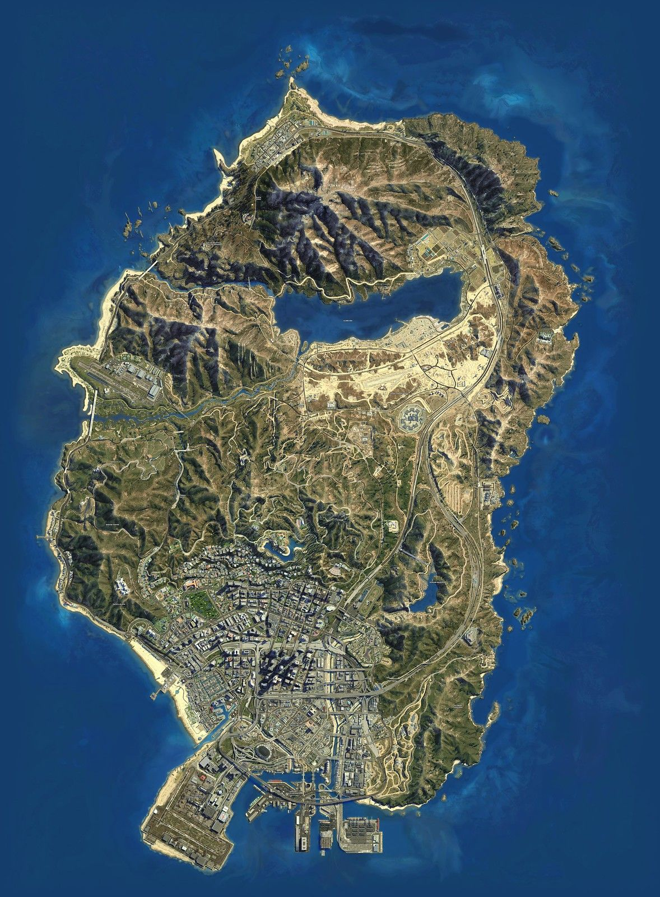
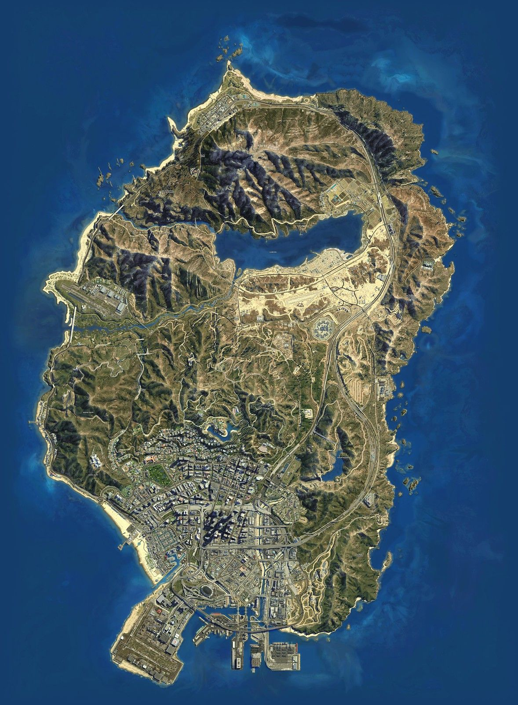

Grand Theft Auto V
This Game is about The protagonist Franklin, Micheal and Trevor.
The map is based in Los Angeles but in the game it is called Los Santos.
You start the game off as Franklin and you steal cars for your boss. after you steal enough cars you steal a nice car from Micheals son so Micheal beats up your boss and after that micheal gets you into Heists.
after you do a heist with Micheal his old friend Trevor who thought Micheal was dead sees him on the news. Trevor then goes on to find Micheal and confront him but they make up for it after a while.
When you are close to the end you rob the biggest bank in los santos. but throughout your journy a rich man devin Western gets you to steal more cars but Micheal and Trevor are messing up the job.
When your at the last mission Devin Western comes to Franklins house and asks for a favour. He wants you to kill Micheal.. or Trevor but there is an option to kill Devin in the cannon you kill devin with Micheal and Trevor ending the game.